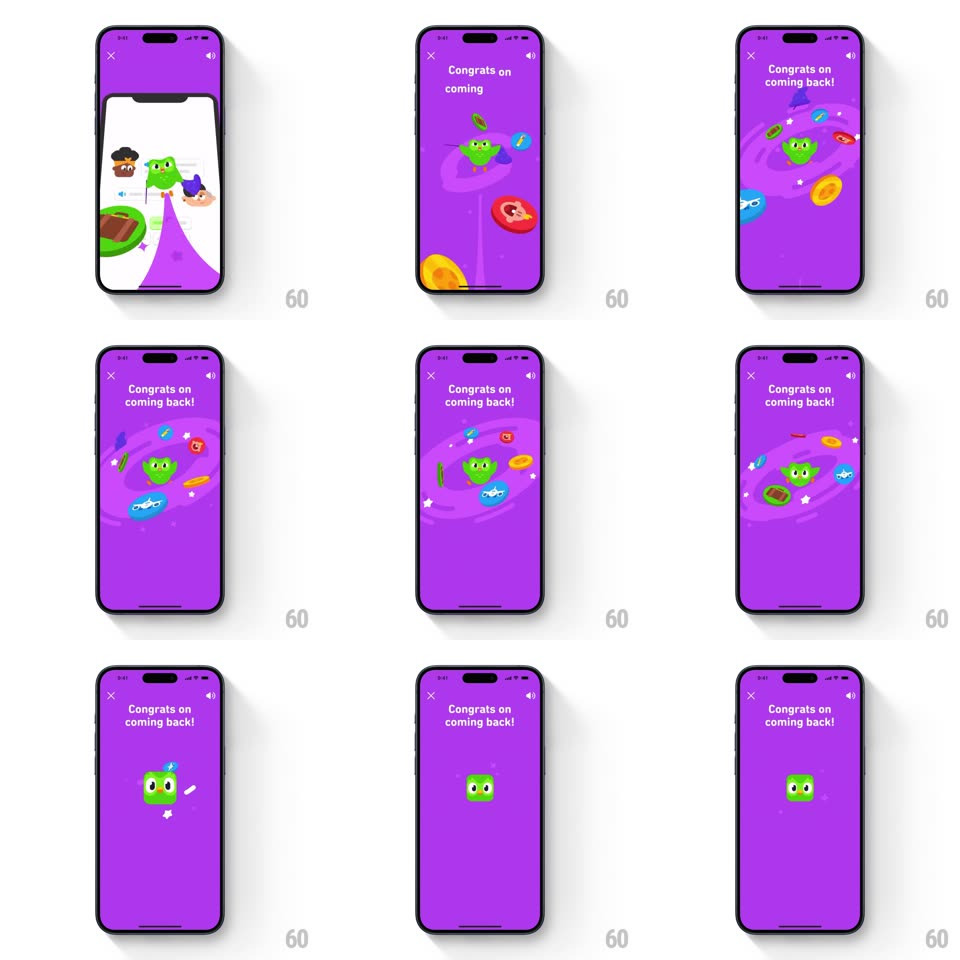

Media
Frame-by-frame

Rebuild this interaction 1:1: Duolingo's welcome-back animation - from a push notification, Duo dives into a purple 3D vortex, then the scene resolves into a flat purple celebration screen ("Congrats on coming back!") where Duo floats at the center of a slow-spinning ring of collectible items (coins, gems, hearts, streak flames) before they scatter away.

Rebuild this interaction 1:1: Duolingo's welcome-back animation - from a push notification, Duo dives into a purple 3D vortex, then the scene resolves into a flat purple celebration screen ("Congrats on coming back!") where Duo floats at the center of a slow-spinning ring of collectible items (coins, gems, hearts, streak flames) before they scatter away.
## Integration
Integration: stack-agnostic spec - springs given as stiffness/damping, timed motions as duration + curve; map every value to your framework and animation library of choice.
## Scene
Purple full-screen animation: "Congrats on coming back!" top headline, Duo in the middle, and a ring of floating items - coins, blue gems, red hearts, streak flames - circling him like an orbit.
## Motion spec
Pattern: transition dive into an orbit celebration.
- The open: from the notification/app state, the screen tips into a purple vortex (perspective tilt + scale, 500ms) that pulls the view "down" into the app world.
- Land: the vortex flattens into the solid purple screen (400ms), Duo springs in at center (spring ~300/16, 450ms) with a sparkle pop.
- The orbit: collectible items (coin, gem, heart, flame, ~8-10 of them) circle Duo on an elliptical path (one revolution ~6s, items at varied radii and tilts), each bobbing slightly (translateY +/-4px, 1.2s loop, phase-offset).
- Items drift in from off-screen first (staggered, 100ms apart, spring ~260/18), join the orbit for a couple of revolutions, then scatter back off-screen (600ms, outward ease-in), leaving Duo alone with small sparkles.
- Duo blinks and bounces gently throughout (translateY +/-5px, 800ms).
## Calibration
- The orbit is an ellipse with a slight perspective tilt - far items shrink and dim a touch.
- The vortex open is a transition, under a second - the orbit is the body of the animation.
## Reduced motion
Skip the vortex; Duo fades in (300ms); items hold a static ring.
## Don't miss
- The item scatter at the end is the exit - the screen resolves to Duo alone, calm, ready for the CTA.
- Sparkles (small white stars) appear at item spawn and scatter points only.